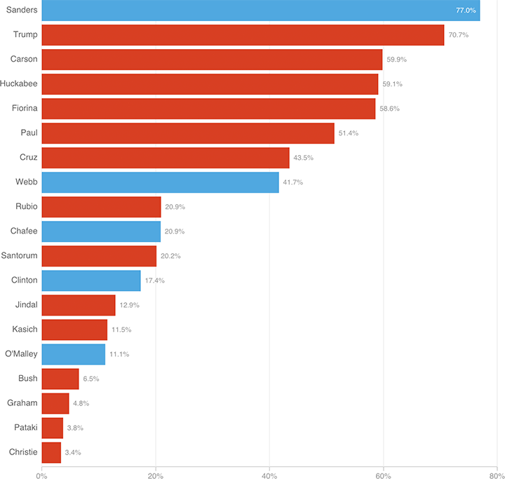

The Small-Donor Champs: Bernie and The Donald
Sanders and Trump both received around 75 percent of their money last quarter from donations of $200 or less, giving them big bases to go back to when they need more funds.
